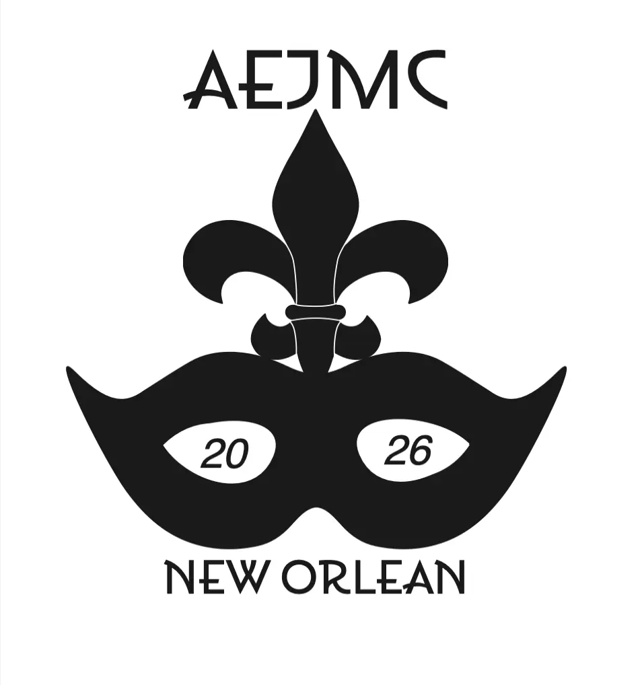

Why design? I enjoy improving overlooked details. Design is elevating the small things: tweaking text, adjusting color, tilting graphics—to create a simple, memorable look. Whether in Canva, Illustrator, or Cricut, assembling these elements feels like solving a puzzle. I aim for designs that convey messages clearly and stick in people’s minds. I strive to communicate meaning with or without words. Creating a better understanding of the design or its subject matter. Like an album cover conveying deep meaning in limited space and time, I value clarity and simplicity, aiming for designs that are easy to understand and remembered fondly.


My passion for design began at an early age with experimentation in video editing tools like Windows Movie Maker and iMovie. This fascination with shaping stories through technology led me to a lasting appreciation for good design and a natural inclination to share what makes designs effective or ineffective. Though my early work did not reflect my passion as it lacked expressive ability, continued learning from professors and time spent on hobby projects have enabled me to demonstrate my artistic design progress here.
From the start, even before I was accepted into the University of St. Thomas in Minnesota, I knew I wanted to major in design. So when I found that the university had an eMedia Department with a Digital Media Arts Degree that offered a Design concentration, I knew which major I was going to declare. As a degree, it started off fairly broad, with both video production and design elements taught, before becoming much more focused on graphic design, web design, media studio, and digital imagery classes, as well as a game design class I took for the fun of it. Overall, UST and the eMedia Department provided me with a well-rounded view of many aspects of design to use in future projects.